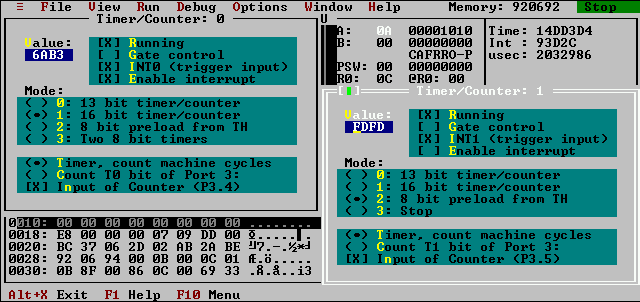

Software simulator for MCS51
This screenshot demonstrates timer/counter window. The window displays
value of the timer and control bits related to the timer/counter
unit. Different windows can be opened to display information about
different timers. Note that Timer2 of 8X52 is not implemented. Value
of the timer or control bits can be changed using these windows or SFR
window.
